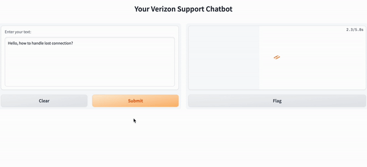
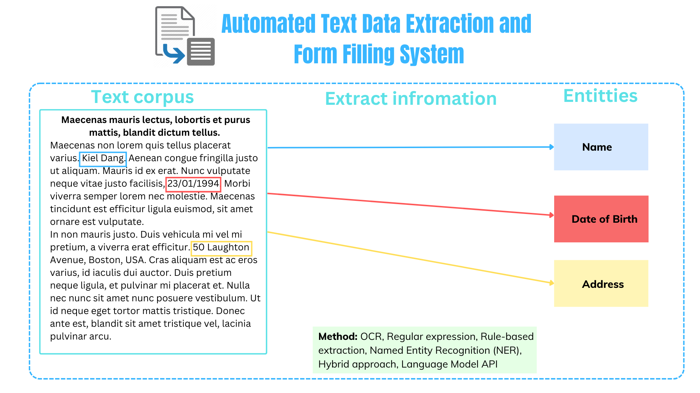
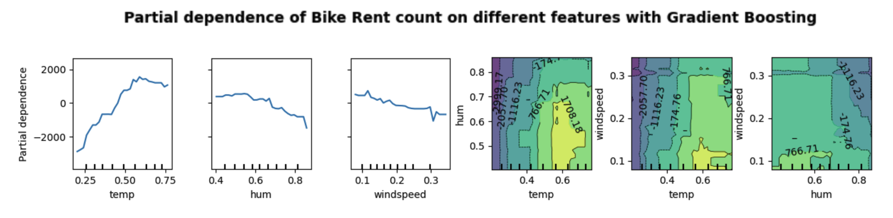

🚀 Practical Projects
📘 I. Deep Learning and AI
✨ Construction Safety - Object Detection
This project is designed to identify unsafe holes on construction sites, helping to ensure the well-being of workers and the integrity of job sites. When combined with a Personal Protective Equipment (PPE) detection model, it forms a robust safety monitoring system deployed on Jetson-based edge inference systems.
🛠️ Workflow and Tech Stack: To train this model, I adopted an Iterative Training Process. Data preparation and deployment were accomplished with Roboflow, while model customization took place in Google Colab.
🔬 Techniques and Strategies: Transfer learning, Hyperparameter tuning, Multiple Deep Learning Algorithms to train and compare (YOLO, DETR, RCNN, COCO, UNet), Iterative training and Model Refinement.
✨ Customer Service Chatbot with In-Context Learning
This project is a deep dive into the world of AI-driven customer service chatbots, enhanced by the power of in-context learning. We leverage the Llama Index and Language Model API to create a chatbot that understands and responds to customer inquiries effectively, transforming the way businesses provide support.

🔍 Project Highlights: - Utilizes Llama Index for efficient token management and in-context learning - Extracts relevant customer support conversations from Twitter using a Kaggle dataset - Trains a chatbot using language models like ChatGPT and Hugging Face - Creates a user-friendly interface with Gradio for easy customer interaction - Revolutionizes customer support by combining AI and real customer interactions


📘 II. Data Science and Machine Learning
✨ Dune Series Network Analysis and Community Detection
This project delves into the captivating “Dune” book series by Frank Herbert using advanced data analysis techniques. By harnessing natural language processing and network science, we uncover the intricate web of character relationships and communities within this iconic science fiction universe.
🔍 Project Highlights: - Utilizes Named Entity Recognition (NER) to extract character and location names - Constructs a character relationship graph using NetworkX - Applies the Louvain Algorithm for community detection - Evaluates community structure with modularity analysis and centrality measures


✨ CV and Job Matching
This application predicts the matching percentage of a candidate’s resume to a job posting. It utilizes the Doc2Vec model, which represents job descriptions and resumes as numerical vectors. Doc2Vec combines the Continuous Bag-of-Words (CBOW) and Skip-Gram techniques to efficiently compare and calculate similarity between textual documents.
Note: The algorithm serves as the first step in a use-case scenario where a company receives multiple job applications for various job postings. The second step involves employing the modified Gale-Shapley algorithm to index candidates for each job and select the best match.


✨ Sales forecasting using SARIMAX
This project follows industry best practices to address time series problems and involves key steps such as checking for stationarity, data transformation, decomposing models into components, anomaly detection, white noise checking, identifying orders, and performance measurement. The goal is to provide accurate sales forecasts for Walmart superstore and facilitate data-driven decisions.


✨ Automated Text Data Extraction and Form Filling System
This project introduces an innovative solution for automating text data extraction and form filling, aiming to streamline data processing in the digital age. Leveraging a combination of OCR, natural language processing, and rule-based approaches, it offers an efficient way to extract information from unstructured text and populate forms accurately, saving time and reducing errors.
🔍 Project Highlights: - Incorporates Optical Character Recognition (OCR) for text recognition - Employs Named Entity Recognition (NER) to identify and capture entities - Utilizes regular expressions for structured data extraction - Integrates rule-based approaches for specific data patterns - Offers a hybrid approach combining multiple methods for robust extraction - Harnesses large language models (ChatGPT API) for context-aware data extraction



✨ Explainable Machine Learning - Understand the Black-Box
Interpretable Machine Learning (ML) is a critical aspect of advancing the use of machine learning in various fields. Many black box models hinder ML’s adoption due to their lack of transparency and interpretability.
🔍 Project Components: - PDP for Bike Rent Data: Demonstrates how to use Partial Dependence Plots for interpreting a machine learning model using bike rental data - LIME for Image Classification: Illustrates the use of LIME to explain an image classification model - SHAP for Breast Cancer Classification: Shows how to use SHAP values for interpreting a breast cancer classification model - Comparative Analysis: Offers a comparative analysis of PDP, LIME, and SHAP



📘 III. MLOPs
✨ Salary Prediction Application
This application predicts the salary of software engineers based on key pieces of information. It features two sections: a prediction page for salary prediction and an exploration page for EDA insights from the dataset. The predictions are generated using an XGBoost model, while the web app is built on Streamlit framework. To ensure the reproducibility, virtual environments are utilized on local hosts and contained by Docker. This app is deployed on GCP as well.


📘 IV. Data Analysis and Business Intelligence
✨ Walmart Ecommerce Dashboard Project
This project showcases the creation of an interactive Ecommerce Dashboard for Walmart using Power BI. The goal was to analyze and visualize key performance indicators (KPIs) to gain insights into sales, revenue, customer behavior, and more. The project followed a structured approach, encompassing defining KPIs, working with raw data in SQL Server for efficient manipulation, building SQL queries for validation, connecting Power BI for visualization, and utilizing Power Query for data cleaning.


✨ CO2 Emission Data Visualization Dashboard
This interactive dashboard project empowers users to explore and visualize carbon dioxide (CO2) emissions data from Our World in Data. It leverages cutting-edge Python libraries, including Panel, Hvplot, and GeoPandas, to create an intuitive and informative platform for analyzing CO2 emissions worldwide. The dashboard enables users to filter emissions data by year and country, compare emissions trends through scatterplots, and visualize geographical variations on a map.